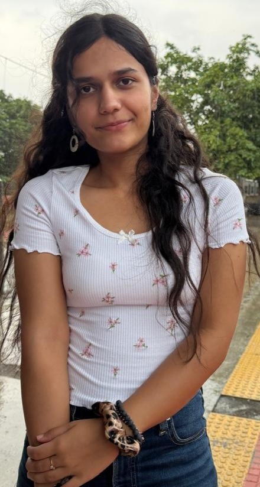

FINAL-YEAR CSE STUDENT · SRM IST
Curious mind.
Meaningful tech.
Hey, I'm Dhriti Sharma — a computer science student exploring the space where AI, data, and real-world problem solving meet.

AI + DataCuriosity in action
9.76 / 10Academic CGPA*
01 / A LITTLE ABOUT ME
Tech with a human side.
💡
I enjoy turning complex ideas into practical experiences — from intelligent retrieval systems to tools that make everyday workflows easier.
My interests span machine learning, data analytics, generative AI, and full-stack development. I'm always learning, experimenting, and looking for the next meaningful problem to solve.
— Dhriti
02 / MY TOOLKIT
Things I work with.
A growing toolkit for building, analyzing, and shipping ideas.
⌘01
Languages
PythonC++CSQLJavaScript
◈02
AI & Data
Machine LearningRAG / LLMsPandasNumPyMatplotlibScikit-learn
⌘03
Development
React.jsNode.jsExpress.jsFastAPIREST APIs
⬡04
Tools & Foundations
Git / GitHubDockerKubernetesPostmanDBMSOS & Networks
03 / SELECTED WORK
Ideas turned into projects.
A few things I've been exploring across AI, data, and software.
RAG✳AI · HEALTHCARE
Unified Multimodal RAG Engine
01A clinical intelligence engine designed to work across structured EHRs, clinical notes, and medical imaging using semantic and graph-based retrieval.
Feb – Sep 2026↗
♧BLOCKCHAIN · ML
CARBONSHIFT
02An Ethereum-powered carbon micro-trading platform exploring smart contracts, transparent transactions, and data-driven decision support.
Dec 2025 – Feb 2026↗
+
FULL STACK · DATABASESHEMOLINK
03A blood bank management system for organizing donations, tracking inventory, matching donors, and handling hospital requests.
Jan – May 2025↗
⬡RESEARCH · CYBERSECURITY
Cognitive Shield
04Ongoing research exploring edge-native generative moving-target defense with streaming anomaly detection for IoT security.
Research · Ongoing↗
Project descriptions are based on my current work and research. More details and code links can be added as repositories are made public.
04 / EXPERIENCE & LEARNING
Learning by building.
MAY 2025 — JUL 2025 · PUNE
Gen AI Engineer Intern @ Verolt
Worked on a Dockerized, microservice-based AI system involving multilingual OCR, tokenization, summarization, translation, and text-to-speech workflows. Also explored SQL analytics, data modeling, Spark optimization, and ETL data quality.
Generative AISQLDockerETLApache Spark
MAY 2024 — JUL 2024 · PUNE
Software Developer Intern @ Doshaheen Solutions
Gained practical exposure to software development lifecycle, system design principles, networking and security fundamentals, Agile practices, and containerized REST APIs deployed to Kubernetes.
REST APIsKubernetesSDLCAgile
EDUCATION · 2023 — 2027
B.Tech, Computer Science & Engineering @ SRM IST
Building a strong foundation in computer science while exploring data science, analytics, machine learning, and intelligent software systems.
CGPA 9.76/10*Class of 2027
05 / CREDENTIALS
Always in learning mode.
Oracle Cloud Infrastructure 2025
Certified Generative AI Professional · Oct 2025
Introduction to Machine Learning
NPTEL SWAYAM (IIT Kharagpur) · Oct 2025
Networking Basics
Cisco · Oct 2025
Programming in Java
NPTEL SWAYAM (IIT Kharagpur) · Oct 2024
COMMUNITY
Good things happen when we build together.
✳
Corporate HeadCoding Ninjas 10x SRM · May 2025 – Dec 2026
◈
Tech Domain MemberData Science Community SRM · Dec 2024 – Dec 2025
✳
✦
06 / YOUR TURNHave a good idea?
Let's make it real.
I'm open to conversations about AI, data, software, and exciting opportunities to learn and contribute.
Email me ↗ds7067@srmist.edu.in